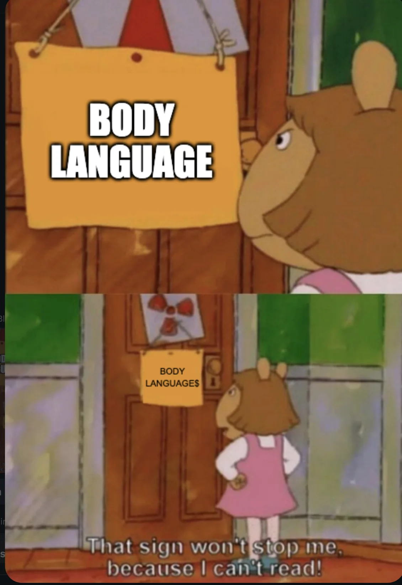
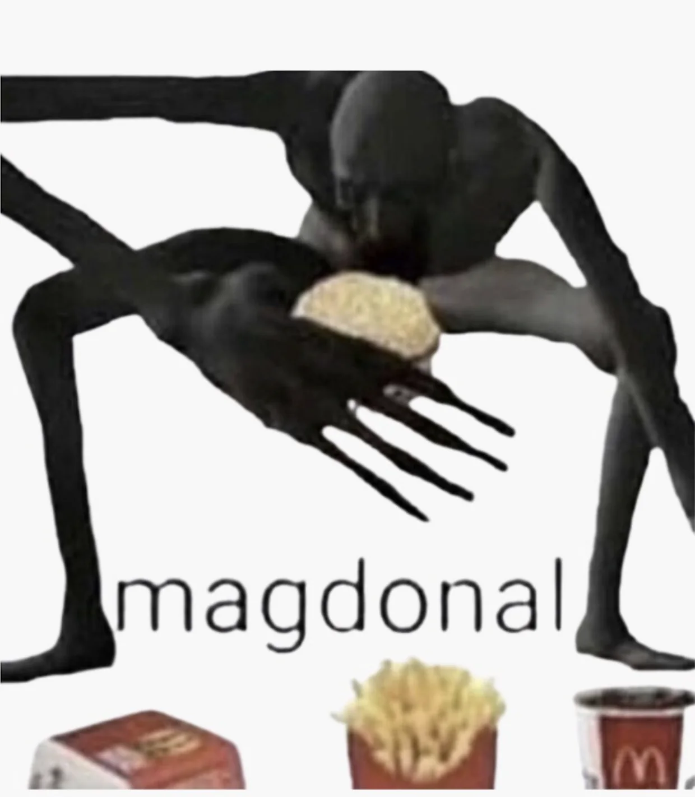
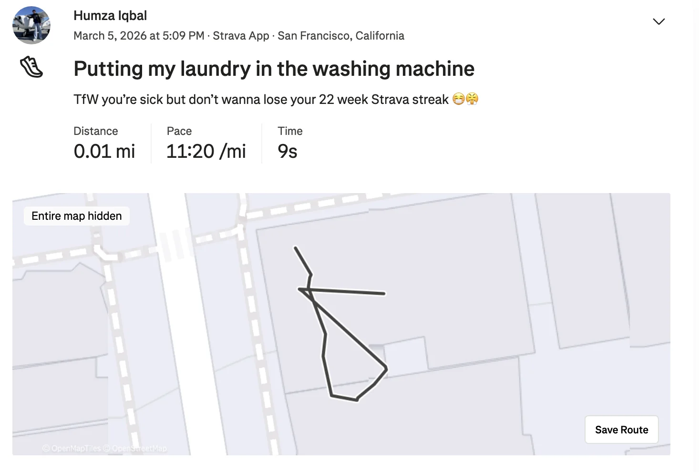
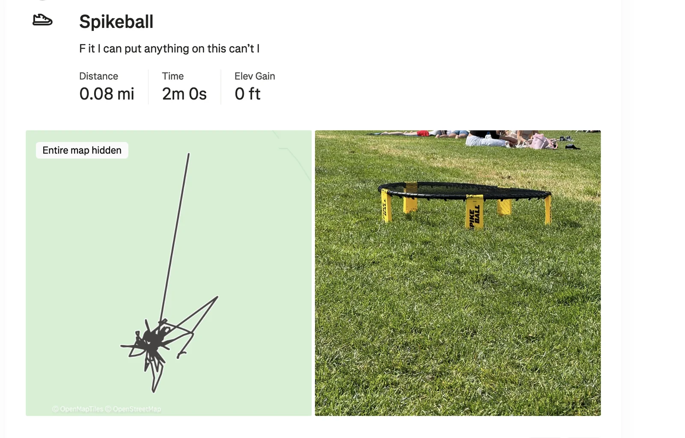
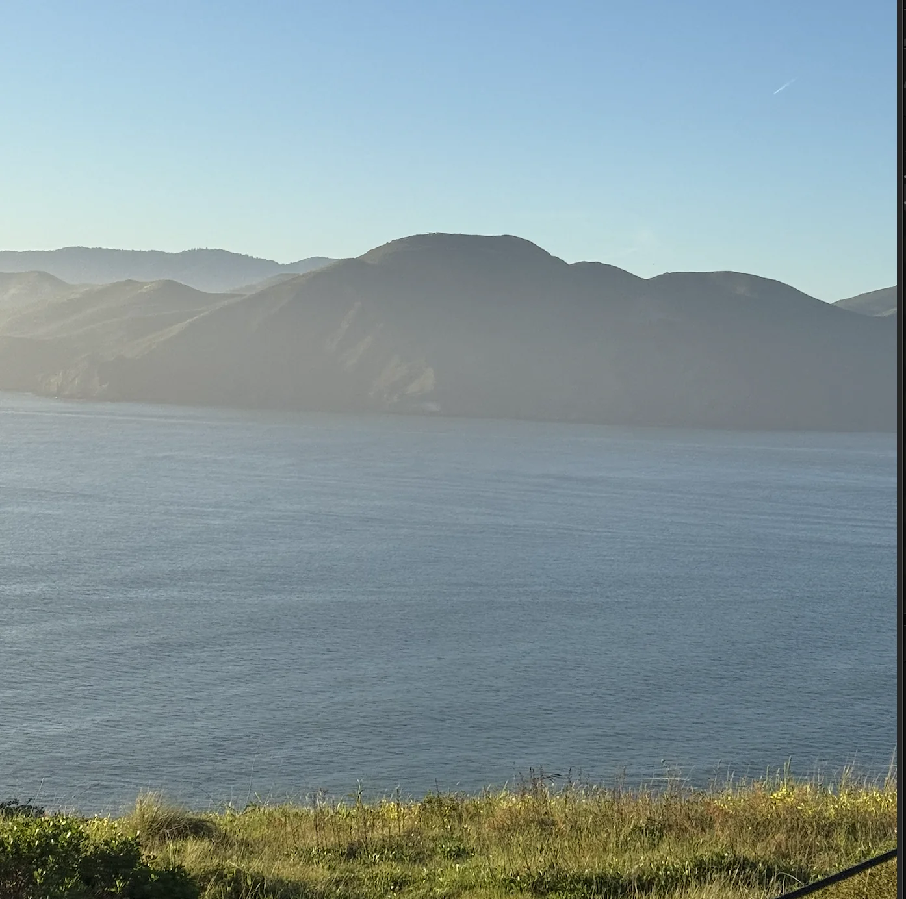
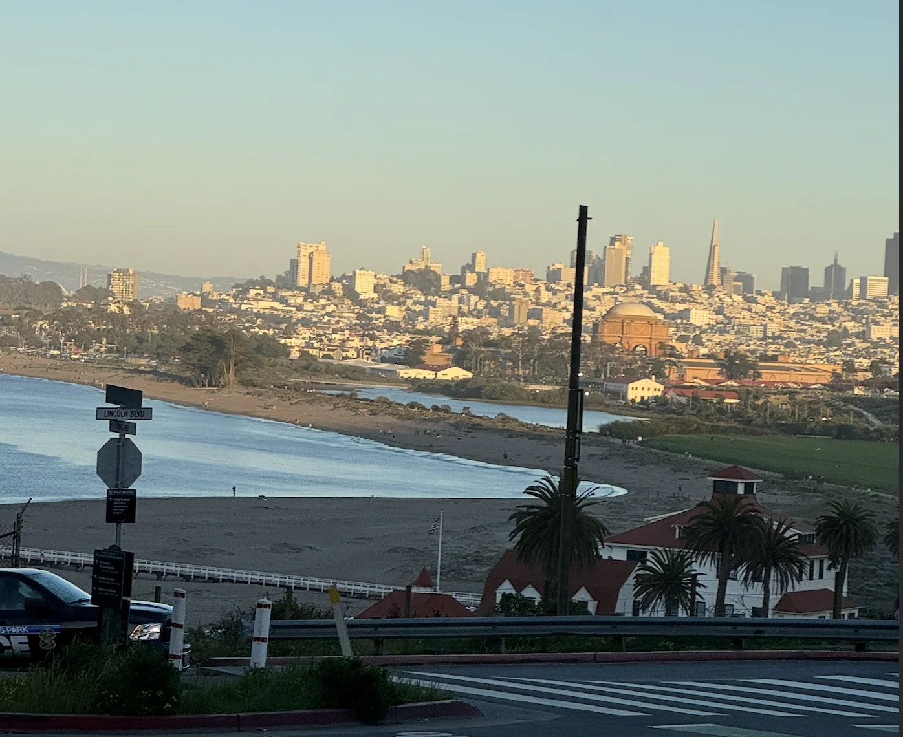
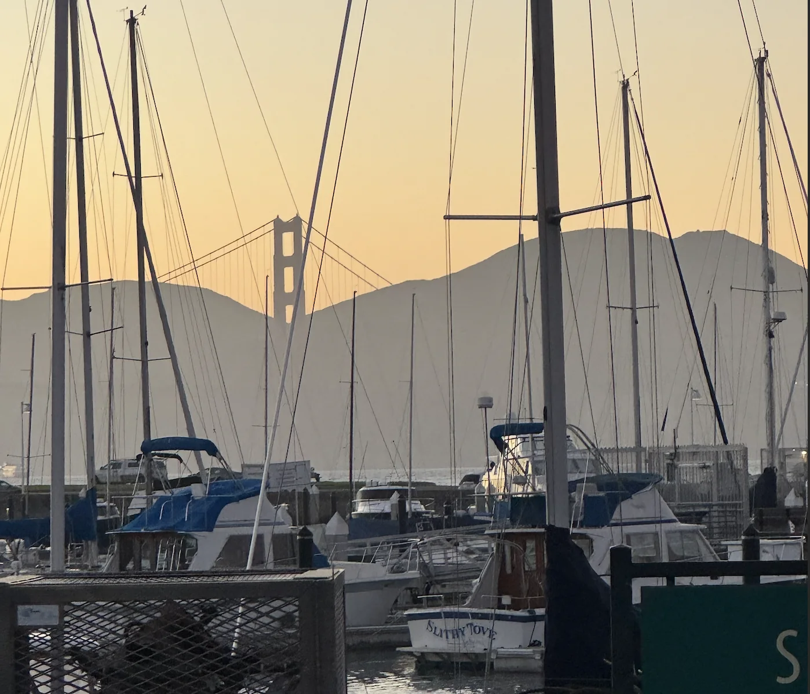
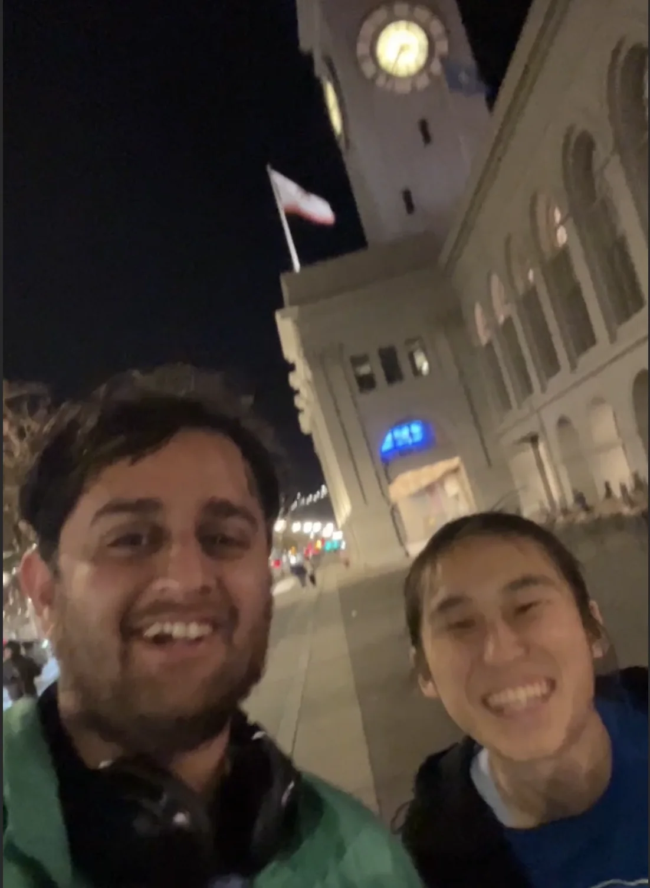

Monday
Unfortunately I was sick today and didn’t do much
Tuesday
See Monday
Wednesday
See Tuesday
Thursday
Mostly a see Wednesday situation except today I was told that my taste in memes is very Millenial and I wanted to understand the Gen-Z meme zeitgeist. To give you an idea this is the kind of meme that I posted

I guess this means Im unc now which honestly I’m fine with. I can use my new found unc powers to troll about some of the new things the youth are into. Back when 6-7 was more popular I missed my opportunity to make it less cool by using it in all the wrong ways by being like “Hey whats up my 6-7s, I can’t wait to go out with yall and have a totes 6-7 terrific day” and make things that I dislike uncool and kill them with the power of unc.
I also started diving more into what makes Gen-Z memes, and apparently the key now is absurdity. Here are some examples

I was definitely confused when I saw these two at first. Apparently there is no point beyond its absurdity. There was also this meme that I liked
This pun is some good content
I did some more research and found the reason Gen Z likes absurdist memes more is a combination of being overstimulated by content and lives feeling incredibly uncertain thus wanting to appreciate the absurdity of it all and wanting something viscerally funny just by looking at it. While investigating the tomes of Reddit I found this
Best advice to add: Don't say you don't get the meme. Half of gen Z doesn't even get their own memes. You just sound old if you say that. The memes go fast and don't stick for long, so if you don't get it, don't ask about it.
I will say that I think I’m a bit of an unc when it comes to memes and that’s ok.
Also today since I’m still stick I wanted to keep up my Strava streak by posting me doing my laundry

Friday
I’m feeling well enough to actually work a full day but decided to WFH out of caution. On a side note working from Golden Gate Park on a nice sunny day is amazing.
After finishing up I went to go get dessert with “The Fisherman” and a couple other friends at Kowloon Tong Dessert Cafe. I wrote a Yelp Review
After a full week inside it felt great to catch up with people again like a regular human. And to finally get more than 5K steps in a day.
Saturday
The day begins with Marina Run Club which felt great after being sick. I wasn’t sure if I could run but I could manage around a 9min/mile pace which isn’t bad for my first day back.
From there I go to trash pickup with “The Notetaker,” “The Philosopher,” “The Politician,” “The Ravenkeeper”. Someone I met at trashpickup bedazzled her own bottle of alcohol which looked pretty cool.
Then I go to play Spikeball with “The Ravenkeeper” and a couple other folks from her Ravenkeeper pack. And I log it on Strava because why not right? None of us are particularly good at Spikeball but it’s a lot of fun.

Later I watch “The Taco,” and “The Pickleballer” eat brunch where I learn the exciting news that “The Pickleballer” got promoted at her job which is awesome and well deserved!!
From there I go to see the LNY parade. The parade starts with everyone’s favorite part … the government officials. You could tell how excited everyone was to see the District Supervisors, the Police Chief, and most exciting of all, the Assessor Recorder. Now I know all of you know exactly what an Assessor Recorder does but on the off chance you don’t they identify taxable property in SF and maintain access to records like property and marriage. I’m sure you can imagine the reverence everyone gave such hallowed figures. That’s why they didn’t want to sully their grand march with anything as pedestrian as applause. My heart was bewitched. My entrails were enthralled. Yeah ok who am I kidding nobody cared. In fact when the police guy came by someone shouted “Name and badge #” to thunderous applause. I even got in on it a little bit when the Assessor Recorder guy came by and I shouted asking what that job even means. Seriously, I never heard of it til now.
At this point I realize the parade isn’t quite what I was hoping it would be. Now granted I’m sure if I stuck around more I could see actually notable figures like Eileen Who or guever but honestly I don’t really care that much about her so I decided to skip out on the rest of it and go for a long walk with “Top of the Rope”.
We walk around from Chinatown to the Marina and its a lovely night for the walk. I learn that her boss coined the term luck surface area . Apparently he’s not a great person to work with but the term is useful and I think about it from time to time.
Sunday
The day begins with trash pickup. “The Yogi” tells me about her exciting Paris trip. And one of her other friends who I happen to know but doesn’t have a nickname is back in town from NYC. For those of you who know he went to Mardi Gras with “The Filmmaker” and is as feisty as he is Cuban. I hadn’t seen him in over a year back when the newsletter was much smaller so it was really nice to see him again.
From there I go to brunch at Peacock Pansy with “The Enabler,” “Tight Knit,” “La Tacqueria Royalty” and another mutual friend in the group who I don’t have a nickname for yet but he ran a really fast 5K recently so maybe I’ll call him “Mr. FastK” until I come up with something better. Sadly I ate here which means no Yelp review in site :( but unsadly the conversations were great :). I learned I could play Pokemon Leaf Green on my switch which makes me tempted to fire it up again and catch em all.
I then go play Spikeball in GGP with “The Spiker,” “Aquaman,” and a bunch of others. Including someone I met one time at trash pickup. After being warmed up yesterday I hit my stride a little bit better and am actually able to spike some balls.
Then I meet up with “The Shadow Brigade” and we finish up the perimeter walk that we started back in October. Fittingly today is the first day of daylight savings so there is plenty of light out in evening. It goes quite smoothly as we hit the most scenic part of the perimeter trail combined with a really gorgeous day. From the end of Land’s End to the Ferry building only takes us about 2 hours and 40 minutes which isn’t bad.




When we end we go to Tacqueria El Buen Sabor for dinner. TIL that you can get broccoli in the quesadilla which “The Shadow Brigade” was very fascinated by.